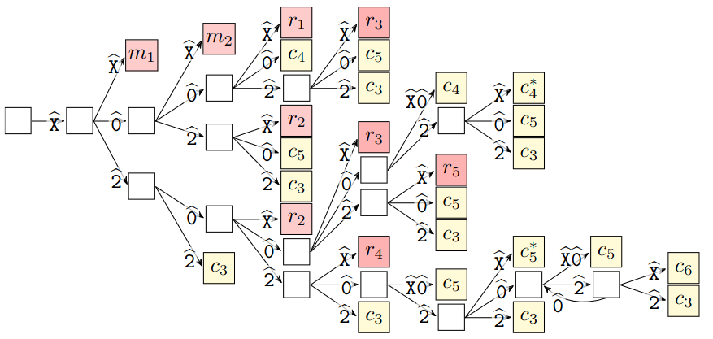
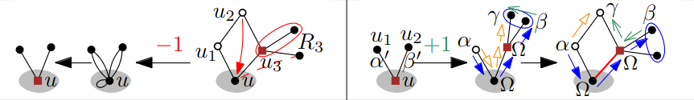

arXiv | tags:[ combinatorial games cactus graphs ]
Computing m-Eternal Domination Number of Cactus Graphs in Linear Time
with Jan Matyáš Křišťan and Tomáš VallaThis paper is a culmination of a long-term effort of me and Matyáš under the supervision of Tomáš. It was initiated by Bachelor’s thesis of Matyáš which then turned into a published paper.
The reserach concerns m-eternal domination – a setting where two players, attacked and defender, play in turns. One designs the initial layout of $k$ guards on the input graph and tells how they are all moved. Each turn the attacked announces a vertex and the defender can move all guards, each by at most one edge, so that the attacked vertex now contains a guard. Clearly, this game played in only one turn is equivalent to the dominating set. The tricky part is that we play virtually infinite number of rounds and if there is a strategy of an attacker to force an undefended vertex, then he wins. For example, paths require N/2 guards while only N/3 is its domination number.
After we published the aforementioned paper we continued to improve the algorithm and eventually built a framework for working with reduction rules for this problem. Before, we had the question resolved for cactus graph where no vertex lies on 3 or more cycles. Gradual refining lead to a polynomial algorithm that completely resolves the question.
The algorithm identifies a “leaf” cycle and then scans vertices around it. Those are partitioned into four groups. Three groups are made by the number of leaves, either 0, 1, or at least 2. The fourth is the vertex that “leads” to the rest of the graph, and from which the reductions are rooted. The scanning of types goes around the circle and according to the type steps in the following automaton. The colored states tell us which reduction rule can be used. These rules either shorten the leaf cycle or get rid of it entirely.

We showed that for any strategy the reductions can remove some fixed number of guards and alter the strategy so that it is still valid for the reduced graph. On the other hand, we create a defending strategy by gradually building it when we backtrace the reductions. The two different directions are depicted below, both showing the difference of one guard; $R_3$ stands for vertices from which a guard can be always removed, while greek letters stand for states of the strategy and colored arrows for guard movements between various pairs of states; read the paper for rigorous deifinitions ;)
